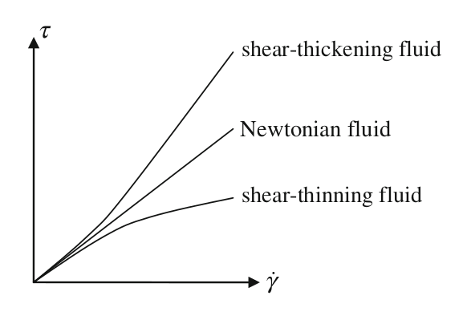
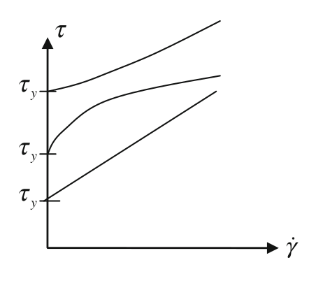
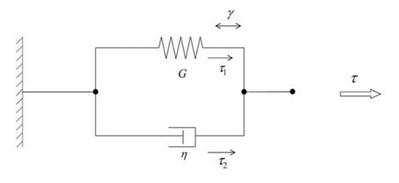
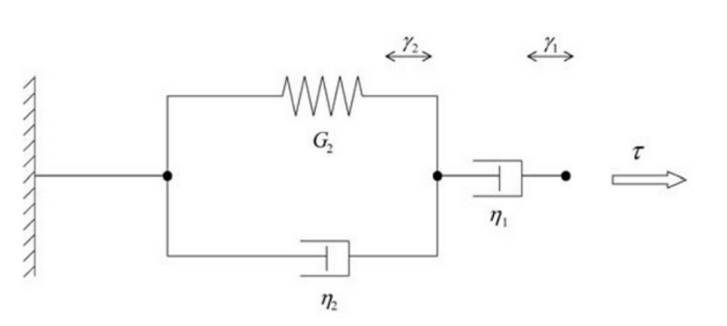

Rheology. A brief introduction#
1. Classification of fluids#
This notebook is based principally on the book by Irgens and also on the classical book by Bird. Also chapter chapter 7 in the book of Engineerign Fluid Mechanics, by H. Yamaguchi has been used.
Very briefly, when we have studied Fluid Mechanics, we have focused on fluids that meet Newton’s law for shear stress,
for 2-D flow, where \(\tau\) is the shear stres, \(\dot\gamma\) is the shear rate. \(\mu\) is the dynamic viscosity, or just viscosity, of the fluid.
Water, air and other molecularly simple fluids obey this law. But most of the liquids do not. Rheology is the branch of science and technology that studies this kind of non-linear behaviour, both in solids and in fluids. We are focusing in this part in the rheology of fluids.
A fluid is called pure viscous if the shear rate is only function of shear stress
This function can be linear in the case of Newtonian fluids or non-linear in the case of non Newtonian fluids (also known as rheological fluids).
In general, for pure viscous fluids, an apparent viscosity can be defined as
The most common model is the Generalized Newtonian Fluids, that is modeled with the power law, also known as Ostwald-de Waele law, where shear stress is modelled as
so
\(K\) is the consistency parameter and \(n\) is the power law index
When \(n = 1\) the fluid is Newtonian and \(K\) is just its viscosity
When \(n < 1\) apparent viscosity decreases with shear rate and the fluid is classified as pseudoplastic or shear thinning. Most non-Newtonian fluids are of this type, like paints, blood, and most of food liquids (juices, creams, soups,…)
When \(n > 1\) apparent viscosity increases with shear rate and the fluid is known as dilatant or shear thickening. This is much less common, and the typical example is the cornstarch (maicena) which allow funny experiments

Other type of behavior is the viscoplastic fluid that behave as solid for a shear stress lower than a limit value, known as yield shear stress, and as a fluid fow larger values of the shear stress.

The most simple model is the Bingham fluid (Bingham was the inventor of the name “Rheology”). Theses fluids behave like newtonian for shear stress larger than the yield shear stress. This model is tipycally used for toothpaste, mud or slurries. It is mathematically modeled as
There are also some Time Dependent models as Thixotropic fluids when shear stress decreases in time for a constant shear rate, and Rheopectic fluids otherwise. These kind of fluids are beyond the scope of this course
2. Generalized Newtonian Fluids#
Power Law Fluid in a pipe#
Let’s consider a very slow flow and/or very small, so that inertial and time terms can be neglected.
We have seen in Fluid Mechanics that for a Newtonian Fluid, Hagen-Poiseuille law holds, according to the Navier Stokes equation for a laminar, viscous flow
giving a paraboloid velocity profile and a flowrate
provided that, as a Newtonian fluid, \(\tau_{rz} = \mu \dot\gamma = \mu \frac{\partial u_z}{\partial r} \).
Now, with a Power Law Fluid, \(\tau_{rz} = K(\dot\gamma)^n\), it leads to
import numpy as np
import sympy as sp
sp.init_printing()
from IPython.display import display, Math
K,Deltap,L,r,n,R = sp.symbols('K {\Delta}p L r n R',positive=True)
uz = sp.Function('u_z')
Eq = sp.Eq(uz(r).diff(r),(1/(2*K)*(-Deltap/L)*r)**(1/n))
display(Eq)
First, we integrate it and try to simplify it a little bit …
exp = (1/(2*K)*(-Deltap/L)*r)**(1/n)
uz = sp.integrate(exp,(r,r,R)).simplify()
uz.simplify()
display(Math('u_z(r) ='+sp.latex(uz)))
uz = uz.factor(deep=True).powsimp()
display(Math('u_z(r) ='+sp.latex(uz)))
… just to integrate it again and obtain the flow rate in the pipe.
Q = 2*sp.pi*sp.integrate(uz*r,(r,0,R)).simplify().powsimp()
display(Math('Q ='+sp.latex(Q)))
Q = Q.simplify()
display(Math('Q ='+sp.latex(Q)))
and, from here, the average velocity, so that we can normalize velocity profile
u_avg = Q/(sp.pi*R**2)
display(Math('\overline{u} = '+sp.latex(u_avg)))
u_dimless = uz/u_avg
u_dimless = u_dimless.simplify()
display(Math('u^* = '+sp.latex(u_dimless)))
In order to get it in dimensionless form, we just impose \(R=1\) so that now \(r\) is the dimensionless radius \(0<r/R<1\)
u_dimless = u_dimless.subs(R,1)
display(Math('u^* = '+sp.latex(u_dimless)))
Plot of the velocity profile#
We are now plotting this dimensionless profile in order to see the effect of the parameter \(n\).
First we lambdify the expression (that is, remember, to convert it to a numerical function of two variables in this case)
u_np = sp.lambdify((n,r),u_dimless)
u_np(1,0.25) # Just to check it

Now the ipywidgets module is used. It is very useful to make interactive widgets. It only works in a dynamic environment, with a kernel; so you have to download the notebook and run it in Jupyterlab or Google Colaborative.
from ipywidgets import interactive
import matplotlib.pyplot as plt
def f(n):
plt.figure(1,frameon=False)
x = np.linspace(-1, 1, num=500)
plt.xlim(-1, 1)
plt.ylim(0,3)
plt.plot(x,u_np(n,np.abs(x)),linewidth=4)
plt.plot(x,u_np(1,np.abs(x)),'--',label=r'$n=1$')
plt.legend()
plt.show()
interactive_plot = interactive(f, n=(0.01, 2,0.01))
output = interactive_plot.children[-1]
output.layout.height = '350px'
interactive_plot
Exercise 1#
Check that dimensionless flowrate is independent of \(n\). What is its value?
Exercise 2#
Reynolds number for power law fluids is defined differently than for a Newtonian fluid. Provided that the dimensionless stress \(\tau^*\) should be written in terms of a dimensionless strain rate \(\gamma^*\) as
Find the definition of \(\text{Re}_n\)
This number defines the similarity when experiments with two different power law fluids are performed.
Exercise 3#
As an exercise for this topic, it is proposed to make a similar study: the laminar velocity profile in a pipe for a Bingham plastic
3. Viscoelastic fluids#
This is a complicated topic. Several constitutive equations have been proposed according to experimental results. Viscoelastic materials have both viscous and elastic behavior. Some examples are rubbers, melted glass and also some complex biofluids, as cytoplasm.
Most of the cases in engineering can only be solved with CFD, due to the high non-linearity between constitutive equations, continuity and momentum balance. Here we are only focusing in simple cases with linear viscoelastic flows.
In general, constitutive equations for linear viscoelastic material are linear relationship between shear stress, shear rate and its time derivative.
Maxwell element#
The most fundamental model is the so-called Maxwell element, composed of a combination in series of a viscous element, with viscosity \(\eta\) and a spring, with constant \(G\).

In this case, both stresses are the same, \(\tau_1= \tau_2\), and the displacements\(\gamma\) are additive, \(\gamma = \gamma_1 +\gamma_2\). By deriving this last expression an arranging terms, we get
where \(\lambda = \frac{\eta}{G}\) is the relaxation time.
%reset -f
import sympy as sp
import numpy as np
t = sp.symbols('t')
eta,G = sp.symbols('eta,G',positive=True,real=True)
gamma = sp.Function('gamma')
tau = sp.Function('tau')
gammaDot = sp.Function('gammaDot')
eq = sp.Eq(tau(t)+eta/G*tau(t).diff(t),eta*gamma(t).diff(t))
display(eq)

In order to properly solve this equation, the hint that it is an Bernoulli Differential Equation has to be passed to the solver.
tauSol = sp.dsolve(eq,tau(t),hint='Bernoulli')
tauSol

Let’s consider a first example in which \(\gamma(t)\) is a step function with \(\gamma = 1\) for \(t<0\) and then it is imposed as \(\gamma = 0\) again for positive time.
tauStep = tauSol.replace(gamma(t),sp.Piecewise((1,t<0),(0,t>=0))).doit()
display(tauStep)

That is, stress is relaxed in time according to the value of viscosity and spring constant. Note that, in general, the value of the stress is not only function of \(\gamma\) and its derivative but also, of its history.
\(G e^{-\frac{t}{\lambda}}\) is the relaxation modulus.
We could also write the expression for \(\tau(t)\) in terms of \(\gamma\) instead of \(\dot\gamma\) by integrating by parts, and then we could obtain
\(\tau(t) = - \int \frac{\eta}{\lambda^2}e^{-\frac{t}{\lambda}} \gamma(t) dt\)
and the function \(M(t) = \frac{\eta}{\lambda^2}e^{-\frac{t}{\lambda}}\) is called the memory function
Let’s now consider that we impose to shear an harmonic constraint
and we can measure stress.
omega,a = sp.symbols('omega,a',positive=True,real=True)
tauSin = tauSol.replace(gamma(t),a*sp.sin(omega*t)).doit()
tauSin = tauSin.expand()
display(tauSin)
After a while, when relaxation time has passed, the first term, \(C_1 e^{-\frac{Gt}{\eta}}\), can be neglected
tauSinInf=tauSin.replace(tauSin.rhs.args[0],0)
display(tauSinInf)

The modulus that multiplies the sinus term is known as \(G'\), the storage modulus, and measures the ability of the fluid to store elastic energy.
GPrime1,GPrime2 = sp.symbols('G\',G\'\'',positive=True,real=True)
GPrime1 = tauSinInf.rhs.args[0]/(a*sp.sin(omega*t))
display(GPrime1)

The modulus that multiplies the cosinus term is known as \(G''\), the loss modulus, and measures the ability of the fluid to lose energy through viscous dissipation.
GPrime2 = tauSinInf.rhs.args[1]/(a*sp.cos(omega*t))
display(GPrime2)
We can write this moduli in terms of characteristic time (let me use here \(t_c\) since \(\lambda\) confuses python with the lambda function)
tc = sp.symbols('t_c',positive=True,real=True)
GPrime1 = GPrime1.subs(eta,tc*G).simplify()
GPrime2 = GPrime2.subs(eta,tc*G).simplify()
display(GPrime1)
display(GPrime2)

We can estimate the behavior of this two parameters as function of the frequency \(\omega\) of the experiment, using the dimensionless time \(\epsilon = \omega t_c\)
epsilon = sp.symbols('epsilon',positive=True,real=True)
GPrime1 = GPrime1.replace(omega,epsilon/tc)
GPrime2 = GPrime2.replace(omega,epsilon/tc)
display(GPrime1)
display(GPrime2)


Let’s plot it…
GPrime1_f = sp.lambdify(epsilon,GPrime1/G)
GPrime2_f = sp.lambdify(epsilon,GPrime2/G)
tt = np.arange(0,5,0.01)
GPrime1_values = GPrime1_f(tt)
GPrime2_values = GPrime2_f(tt)
import matplotlib.pyplot as plt
fig,ax = plt.subplots(figsize=(8,4))
ax.plot(tt,GPrime1_values,label=r'$G^\prime$')
ax.plot(tt,GPrime2_values,label=r'$G^{\prime\prime} $')
ax.plot(tt,GPrime1_values+GPrime2_values,linewidth=3,label=r'$G^\prime + G^{\prime\prime} $')
ax.set_xlabel(r'$\omega t_c$')
ax.legend()
<matplotlib.legend.Legend at 0x7fc479d4ddc0>
The value of \(\tau\) for large \(\omega\) gives \(G^\prime\), the storage modulus. The slope of the curve for small \(\omega\) allows the estimation of \(G^{\prime\prime}\) the loss modulus and, hence, the viscous component of the fluid. That is the fundamentals of the oscillatory rheometers
Voigth-Kelvin element#
However, Maxwell model does not explain most of the viscoelastic behavior. Another option is the Voigth, or Kelvin, element

In this element the strain \(\gamma\) (displacement) are the same, and the stress \(\tau\) (forces) are additives
%reset -f
import sympy as sp
import numpy as np
t = sp.symbols('t')
eta,G = sp.symbols('eta,G',positive=True,real=True)
gamma = sp.Function('gamma')
tau = sp.Function('tau')
gammaDot = sp.Function('gammaDot')
eq = sp.Eq(tau(t),G*gamma(t) + eta*gamma(t).diff(t))
display(eq)

gammaSol = sp.dsolve(eq,gamma(t),simplify=True,ics={gamma(0):0},hint='Bernoulli')
gammaSol

In a creep experiment, a constant stress is applied and then the element is released
t1,tau0 = sp.symbols('t_1,tau_0',positive=True)
gammaSolTau0 = gammaSol.replace(tau(t),sp.Piecewise((tau0,t<t1),(0,t>=t1))).doit()
display(gammaSolTau0)

tc = sp.symbols('t_c',positive=True)
gammaSolTau0 = gammaSolTau0.replace(eta,G*tc).simplify()
display(gammaSolTau0)

xi = sp.Function('xi')
xiEq = sp.Eq(xi(t),gammaSolTau0.rhs.replace(tau0,G))
display(xiEq)
epsilon,epsilon1 = sp.symbols('epsilon, epsilon_1',positive=True)
xiEq = sp.Eq(xi(epsilon),xiEq.rhs.replace(t,tc*epsilon).replace(t1,tc*epsilon1))
display(xiEq)
xi_f = sp.lambdify((epsilon,epsilon1),xiEq.rhs)
tt = np.arange(0,5,0.01)
epsilon1 = 2
xi_values = xi_f(tt,epsilon1)
import matplotlib.pyplot as plt
fig,ax = plt.subplots(figsize=(8,4))
ax.plot(tt,xi_values,label=r'$\gamma\frac{G}{\tau_0}$')
ax.set_xlabel(r'$\frac{t}{\lambda}$')
ax.legend()
<matplotlib.legend.Legend at 0x7fc479bf81c0>

In this case, the characteristic time \(\lambda = \frac{\eta}{G}\) is called retardation time. This model describes the behavior of a viscoelastic solid.
Jeffreys-Burger element#
However, Maxwell and Voight elements are not able to describe correctly real viscoelastic materials. The are several complex combinations of this elements, and the more usual is the Jeffreys (or Burger) element that replaces in the Maxwell element the spring by a Voight element.

Stress in both parts are the same
and, on the other side,
By combining these equations, we can obtain
with
There is a viscosity \(\eta_0\) (or \(\eta_1\)), which is known as the viscosity of the fluid part (considered newtonian) and two characteristic times, \(\lambda_1\) and \(\lambda_2\), which are the relaxation and the retardation times, respectively.
%reset -f
import sympy as sp
import numpy as np
t = sp.symbols('t')
eta1,eta2,G2 = sp.symbols('eta_1,eta_2,G_2',positive=True,real=True)
gamma = sp.Function('gamma')
tau = sp.Function('tau')
eq = sp.Eq(tau(t)+(eta1+eta2)/G2*tau(t).diff(t),eta1*gamma(t).diff(t)+eta2/G2*gamma(t).diff(t,2))
display(eq)
tauSol = sp.dsolve(eq,tau(t),hint='Bernoulli').doit()
tauSol = tauSol.expand()
display(tauSol)

Again, first term can be neglected after a while
tauSolInf=tauSol.replace(tauSol.rhs.args[0],0)
display(tauSolInf)

Extension to vectorial notation#
Maxwell model is written, in vector and tensor notation as
where \(\stackrel{\triangledown}{\boldsymbol{\tau}}\) is the Upper Convective Time Derivative, defined as
In a similar way, Jeffreys model is written as
known as the Oldroyd-B model
try:
%load_ext watermark
except:
!pip install watermark
%watermark -v -m -iv
Python implementation: CPython
Python version : 3.8.13
IPython version : 8.0.1
Compiler : GCC 10.3.0
OS : Linux
Release : 5.4.0-144-generic
Machine : x86_64
Processor : x86_64
CPU cores : 4
Architecture: 64bit
sympy: 1.7.1
numpy: 1.22.2